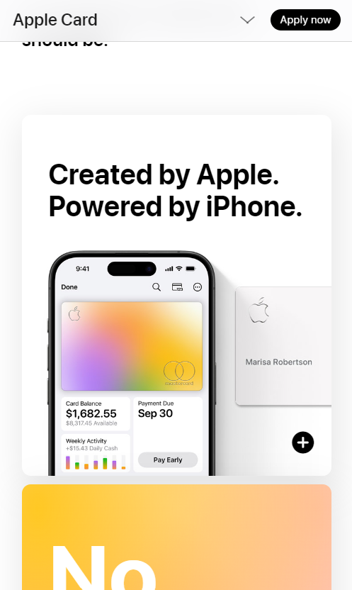

Design Principles Document
Jeremiah Franco
White Space and Clean Design
Apple
Apple Card One of the reason why I chose Apple for having a website with white space and with a clean design is because when you look at Apple's website, the margins surrounding the images and cards are wide. Utlizing white space for their website helps organize their content they are sharing and it helps with the readability for the user to understand.
Rule of Thirds
Hubspot
HubspotHubspot's websites utilizes the user of rule of thirds by focusing the important content on the points where the grid intersects. If you were to put a 3x3 grid over the image, you can see that the where the four points interests at - close to the center of the picture - you can see that the user will see their motto and an image of the weekly activity.
Contrast
Codecademy
CodecademyCodecademy's website is a good prime example of using contrast. In their website, you can see the two colors, purple and yellow. The difference in colors helps the content of the website stick and stand out. Not only does it help the content of the website stick out, but depending of the color text, it also makes the text more eligible.